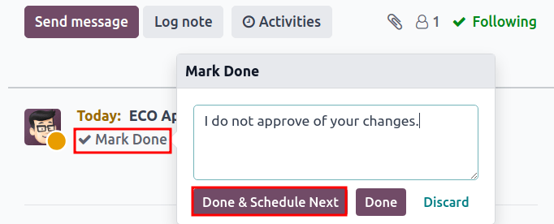

Approvals¶
Notify stakeholders and managers automatically by assigning approvers to stages of engineering change orders (ECOs) under review. Changes can only be applied after the assigned approver accepts them. Approvals ensure reviews by team members, which prevents mistakes and premature actions.
See also
Add approver¶
To add an approver, first go to the , and click on the project card of an ECO type to open the Gantt view of the ECOs.
On the Engineering Change Orders page, hover over the intended stage, and select the ⚙️ (gear) icon. Then, click Edit to open a pop-up window.
Note
Approvers can be added to any stage, but it’s strongly recommended to assign them to the verification stage, which comes before the closing stage, where ECOs are applied, and the BoM version is updated.
See the documentation about stage types for more information.
In the Edit stage pop-up window, click the Add a line button, located under
Approvals. Then, type in the approver’s position (or title) under Role (e.g.
Engineering Manager, Quality Team, etc.), and select the relevant User from the
drop-down menu.
Next, set the Approval Type to Is required to approve, Approves, but the approval is optional, or Comments only.
Example
Assign the CTO, “Mitchell Admin,” as a required approver for ECOs in the Validated stage in
the New Product Introduction ECO type.
Approvals from the quality and marketing teams are not required to apply changes to the ECO because their Approval Type is set to Approves, but the approval is optional and Comments only, respectively.

Manage approvals¶
Approvers can easily track their to-do approvals by navigating to the , and looking at the card for an ECO type, which shows the count of open tasks assigned to them.
Here’s what each button on an ECO project card does:
The # Engineering Changes button displays a count of in-progress ECOs of this ECO type. Clicking the button opens the Gantt view of the Engineering Change Orders page.
My Validations displays a count of ECOs the approver must accept or reject. Clicking on this button displays ECOs pending approval or rejected (marked with the red Blocked state).
The All Validations button shows the count of ECOs awaiting approval or rejected by any approver. Clicking it reveals these pending ECOs.
To Apply displays a count of ECOs to which the user needs to apply changes. Clicking on the button displays all the ECOs to approve, and apply changes to, in the verification stage.
ECOs marked with the green Done stage have already been approved, and the user just needs to click on the ECO to enter the form view, and click the Apply Changes button.

Approve ECOs¶
Navigate to an ECO in a verification stage, while logged in as the assigned approver, to see the Approve, Reject, and Apply Changes buttons.
To approve the ECO, and apply the changes onto the production BoM, click Approve, and then Apply Changes.
Note that the Apply Changes button will not work unless the Approve button was clicked first. Additionally, the chatter logs the history of the clicked buttons.
Warning
When the Approval Type is not set to Is required to approve, approval from the associated user is not needed before applying changes with the Apply Changes button. Thus, the Apply Changes button will work without requiring the Approve button to be clicked first.
Automated activities¶
When an ECO is moved to a verification stage, a planned activity is automatically created for assigned approvers to review the ECO. Approvers receive a notification in their activities inbox, accessible through the 🕘 (clock) icon at the top of the page.
In the to-do task list, the Engineering Change Order (ECO) notification displays the number of activities marked Late, Today, and Future. Clicking on each of these buttons shows a filtered Gantt view of the respective ECOs.
Example
Scheduled activities are shown as a number on the 🕘 (clock) icon, with 5 ECOs
pending approval Today. Currently, there are 0 Late or
Future ECOs.

By clicking a pending ECO, a planned activity for ECO Approval is recorded in the chatter. Click on the i (Info) icon to view additional information, including the approval’s Created date, the approver Assigned to it, and the due date.

Follow-up activities¶
When ECOs are rejected, tasks need to be assigned to project members for required modifications before ECO approval. To create tasks with deadlines, navigate to the rejected ECO form, and go to the chatter.
Select the Mark Done button in the Planned Activities section of the chatter to close the activity, and open a pop-up window for creating tasks.
In the Mark Done window, click Done & Schedule Next to open a new Schedule an Activity window. Next, set the Assigned to team member and the Due Date for completing the changes. Provide task details in the Summary field and the text box. Click the Schedule button to close the window.
After closing the window, on the ECO form, move the ECO back one stage. Doing so ensures that when the team member completes the changes, and returns the ECO to the verification stage, a new ECO Approval task is created for the approver.
Example
The approver creates an activity for the Responsible of the ECO, Laurie Poiret,
that details the changes required for the approver to Accept the ECO. Clicking the
Schedule button creates a planned activity for Laurie due on 08/15/2023.